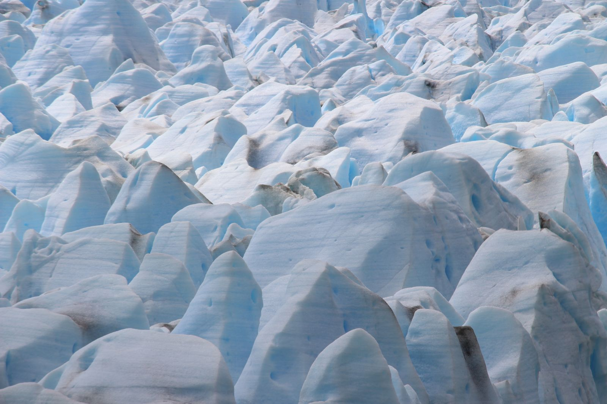

About · The practice
Fifteen field seasons, one way of keeping the books.
I am Elin Strand, a glaciologist based in Tromsø. I spent my early career inside research institutes — a doctorate in glaciology, then seasons in Svalbard, mainland Norway and the Alps measuring other people's glaciers for other people's questions. In 2016 I started this practice to do the same work for the people who have to act on the numbers: water authorities planning reservoirs, institutes building long series, regions whose towns drink meltwater. The science did not change. The accountability did.

The working year
How a balance year runs
A balance year is not the calendar year — it runs from the start of one accumulation season to the end of the next ablation season, roughly October to September in the northern hemisphere. Five stages, in the order the ice dictates.
Spring — the accumulation survey (April–May)
Snow pits are dug on the accumulation area and probed across it: depth, and density layer by layer. This is the winter's deposit, measured before the melt can touch it. Stakes buried by winter snow are found, freed and recorded. What is measured in spring cannot be reconstructed in autumn — which is why programmes book two visits, not one.
Summer — the watching brief
On reservoir glaciers, a mid-summer visit reads ablation stakes while the melt is running, so the authority's inflow model works from measurements, not hopes. Weather stations are downloaded and serviced. The rest of the summer, the glacier does the work and the practice does the arithmetic on last year's series.
Autumn — the end-of-season read (September–October)
Every stake is re-measured: how much of it the year has exposed is how much ice the surface lost. The end-of-summer snowline is mapped — the visible equilibrium line, checked against the computed one. This is the visit the year's number hangs on, and the one the weather most often argues with; the plan carries spare days for exactly that reason.
The conversion — depths become water
Field books hold depths: metres of snow, metres of stake emergence. The balance is kept in water equivalent, and the conversion is density, nothing more mysterious. The panel below shows the two conversions every report uses, with the figures printed — a reader with a pencil can check any number I publish.
Winter — homogenise, report, deposit
The year's balance is computed band by band and area-weighted — the arithmetic the Explorer on the home page demonstrates. If a method changed during the year, the series is re-homogenised and the change logged. The client receives the number, its uncertainty, and the method note; the data is deposited in the client's archive and reported in the standard format used by the World Glacier Monitoring Service, so the series outlives the practice.
How a depth becomes water
Water equivalent is a depth multiplied by a density, expressed against water at 1,000 kg/m³:
- Snow: a spring pit finds 1.80 m of snowpack at a mean density of 380 kg/m³ → 1.80 × 0.38 = 0.68 m w.e. of winter accumulation.
- Ice at a stake: glacier ice runs at about 900 kg/m³, so a stake that emerges 2.10 m over the season records 2.10 × 0.90 = 1.89 m w.e. lost at that point.
- Firn — old snow on its way to becoming ice — sits between the two and is measured in the pit, never guessed.
Point measurements become a glacier-wide figure only through the elevation bands: each band's balance is weighted by its share of the area. That weighting is the whole method, and it is why the Explorer and Table 1 on the home page agree to the last decimal.
Safety, at practice level
Fieldwork on glaciers is mountaineering with a notebook, and it is planned like it:
- Two people minimum on the ice, always; no solo fieldwork, ever.
- Crevassed terrain is travelled roped, with the route chosen from the season's snow cover, not last year's habit.
- Weather cut-offs are decided the night before, against written limits in the programme plan — not debated at the tent door in the morning. Case file 03 is what that rule costs, and what it buys.
- Every party carries satellite communication and files a movement plan with a named contact ashore.
- A visit abandoned on the rule is rescheduled, and reported as abandoned — the client reads about it in the season's report, in those words.
Engagement terms, plainly
- Booking: programmes are booked a season ahead; the spring window closes at the end of February. A programme's price is fixed in writing before its season opens.
- Invoicing: per season, on delivery of the annual report. Field day work is invoiced monthly.
- Access costs: helicopter time and hut fees are passed through at cost, with receipts, and agreed as a ceiling in advance.
- Weather: a field window lost to weather is rescheduled within the season where the ice allows; it is not refunded, because the team's season is committed either way — this is stated here so it never has to be argued later.
- Data: the client's data is the client's. The practice keeps a working copy for series continuity and deposits the record as the report specifies.